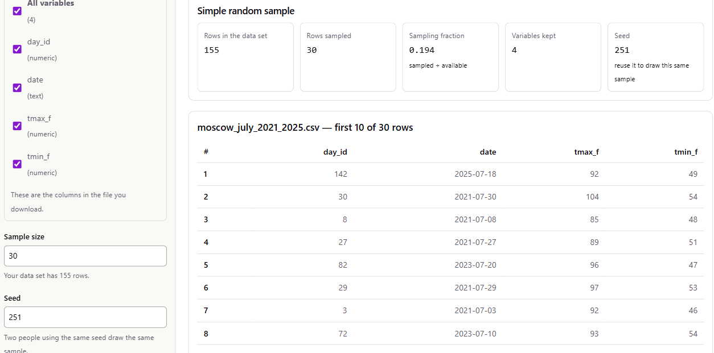
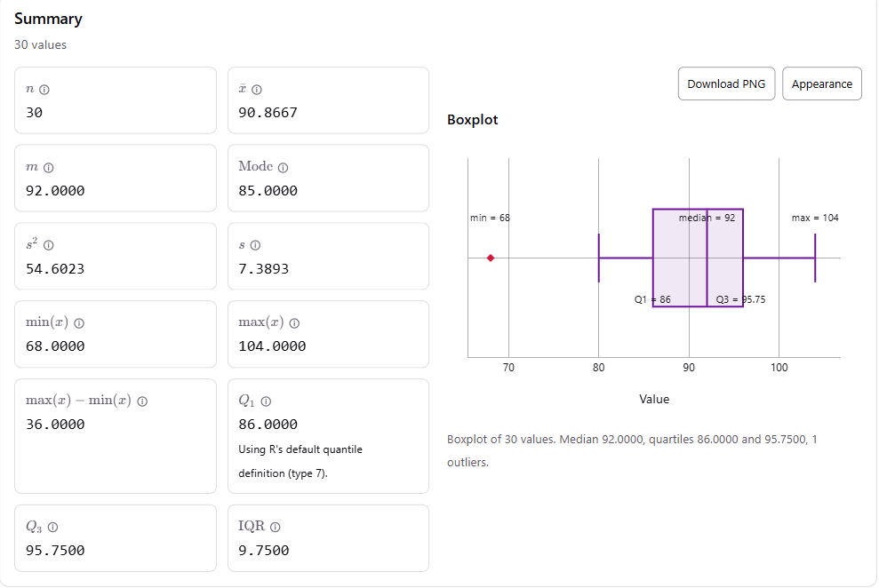
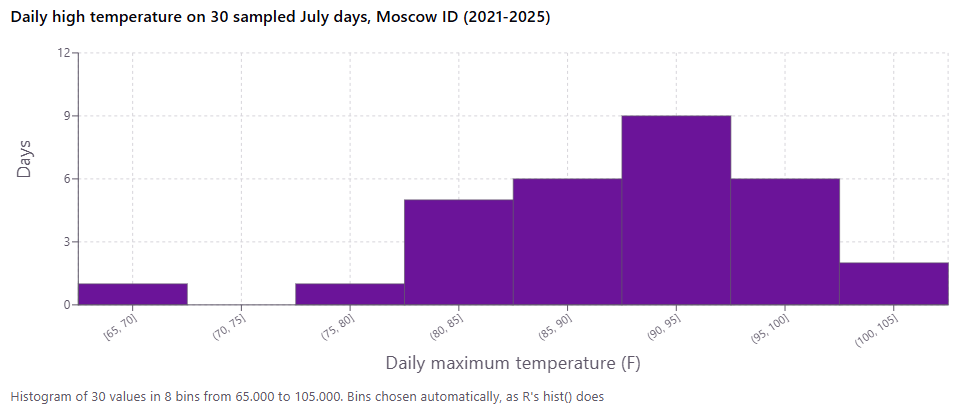
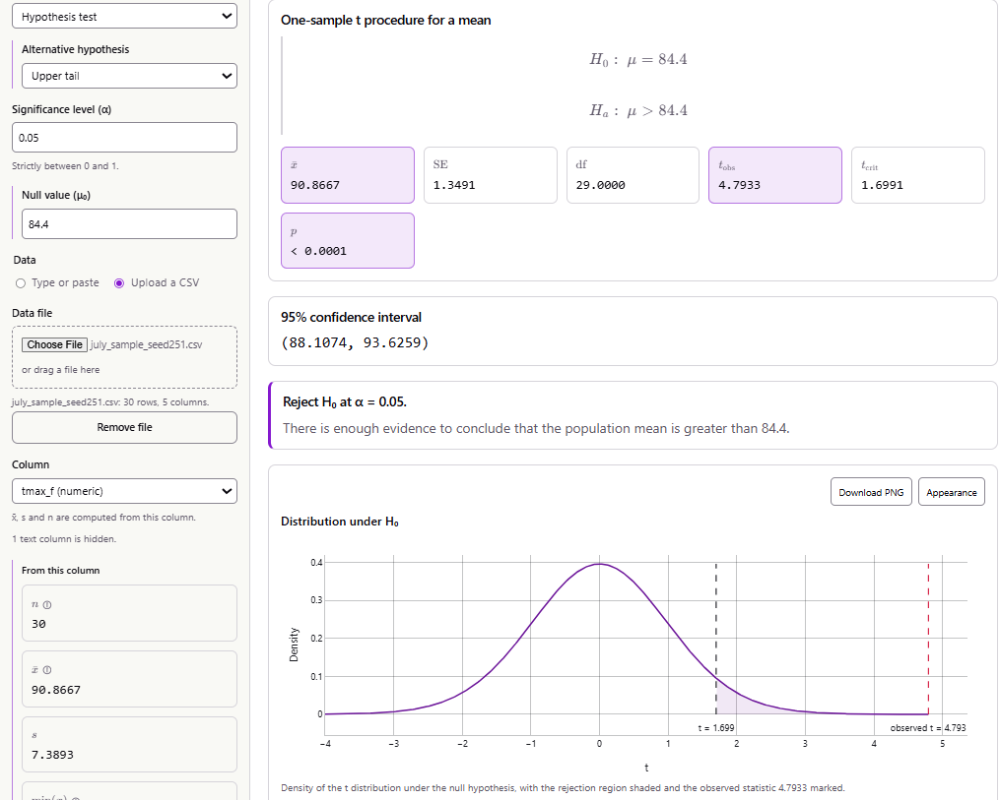

This is a completed example of the course project. It shows what a strong report looks like when the variable being analyzed is quantitative. It follows the six steps on the Project Description page in order, so you can compare it against the rubric section by section. Use it to see the level of detail and explanation expected. Do not copy its dataset, question, or wording. Your project should be about a topic you choose. The example was prepared with the help of Claude (Anthropic), and every calculation in it was done with the course’s stat-tools site. The screenshots come from those tools.
(A) Citations. I used two datasets from NOAA: the daily observations and, for the benchmark, the official climate normals for the same station.
Menne, M. J., Durre, I., Korzeniewski, B., McNeill, S., Thomas, K., Yin, X., Anthony, S., Ray, R., Vose, R. S., Gleason, B. E., & Houston, T. G. (2012). Global Historical Climatology Network – Daily (GHCN-Daily), Version 3 [Data set]. Station USC00106152, MOSCOW U OF I, ID US, daily maximum temperature (TMAX), January 1, 2021 – January 31, 2026. NOAA National Climatic Data Center. https://doi.org/10.7289/V5D21VHZ. Accessed September 24, 2026.
Palecki, M., Durre, I., Applequist, S., Arguez, A., & Lawrimore, J. (2021). U.S. Climate Normals 2020: U.S. Monthly Climate Normals (1991–2020) [Data set]. Station USC00106152. NOAA National Centers for Environmental Information. https://doi.org/10.25921/wck8-er13. Accessed September 24, 2026.
Working links to the exact files I downloaded:
(B) Background.
MLY-TMAX-NORMAL) is 84.4 °F.(A) Question. Were July afternoons in Moscow from 2021 to 2025 hotter, on average, than the official 1991–2020 normal of 84.4 °F?
I chose this because recent summers have felt hot. For example, the record-breaking Pacific Northwest heat wave was in late June 2021. I wanted to know whether the recent Julys are really hotter on average, or whether a few memorable hot spells just stand out.
(B) Variable. Daily maximum
temperature (TMAX, °F) is a quantitative,
continuous variable, although the station records it to the
nearest whole degree. Each observation is one July day’s highest
temperature. The average of this variable over July days is exactly what
NOAA’s July normal measures, so comparing my sample mean to 84.4 °F is a
fair comparison.
(C) Hypothesis in words. I expect the mean daily high temperature of July days in 2021–2025 to be greater than the 1991–2020 normal of 84.4 °F. I chose the direction before looking at any data, because the question is specifically about hotter Julys.
(A) and (B) Method. My population is the 155 July days from 2021 to 2025. I drew a simple random sample of n = 30 days without replacement with the stat-tools Simple Random Sample tool. To repeat it:
day_id
(1–155), date, tmax_f and
tmin_f.
Figure 1. The Simple Random Sample tool after the draw: 30 of 155 July days sampled with seed 251. The first rows of the sample are shown.
(C) Justification.
Possible bias.
(D) The sample is listed in full in Appendix A.
(A) Descriptive statistics from the stat-tools Statistic Calculator, which uses R’s default quartile definition:
| Statistic | Value (°F) |
|---|---|
| minimum | 68 |
| Q1 | 86.00 |
| median | 92 |
| mean | 90.8667 |
| Q3 | 95.75 |
| maximum | 104 |
| interquartile range | 9.75 |
| standard deviation | 7.3893 |

Figure 2. Statistic Calculator output and boxplot for the 30 sampled daily highs (°F). The red point is the low outlier (68 °F).
(B) Plots. The boxplot is in Figure 2. The histogram
below came from the Make Graphs tool, with its
automatic bins, which are the same ones R’s hist()
uses:

Figure 3. Histogram of the daily maximum temperature on 30 sampled July days in Moscow, 2021–2025. The bins are 5 °F wide.
(C) Shape, center and variability.
(A) Hypotheses. Let \(\mu\) be the mean daily maximum temperature of July days at the Moscow U of I station in 2021–2025.
\[ H_0: \mu = 84.4 \text{ °F} \qquad\qquad H_a: \mu > 84.4 \text{ °F} \]
In words, \(H_0\) says recent July highs average the same as the 1991–2020 normal. \(H_a\) says they average hotter. I use a significance level of \(\alpha = 0.05\).
(B) Choice of test and assumptions. I use a one-sample \(t\) test for a mean. I have one quantitative variable and want to compare its mean with a fixed benchmark. The population standard deviation \(\sigma\) is unknown, so I estimate it with \(s\), which is why the test uses a \(t\) distribution rather than \(z\).
The assumptions are:
(C) Computations.
Step 1: observed statistics (Table 1): \(n = 30\), \(\bar{x} = 90.8667\) °F, \(s = 7.3893\) °F.
Step 2: standard error. \[ SE = \frac{s}{\sqrt{n}} = \frac{7.3893}{\sqrt{30}} = \frac{7.3893}{5.4772} = 1.3491 \text{ °F} \]
Step 3: test statistic. \[ t_{obs} = \frac{\bar{x} - \mu_0}{s/\sqrt{n}} = \frac{90.8667 - 84.4}{1.3491} = \frac{6.4667}{1.3491} = 4.793 \]
Step 4: degrees of freedom and critical value. \(df = n - 1 = 29\). For an upper-tail test at \(\alpha = 0.05\) the critical value is \(t_{29,\,0.95} = 1.699\), and we reject \(H_0\) if \(t_{obs} \geq 1.699\).
Step 5: p-value. \(p = P(t_{29} \geq 4.793) \approx 0.00002\), which the tool reports as \(< 0.0001\).
Step 6: 95% confidence interval for \(\mu\) (\(t_{29,\,0.975} = 2.045\)): \[ \bar{x} \pm t_{29,\,0.975}\, SE = 90.8667 \pm 2.045(1.3491) = 90.8667 \pm 2.759 = (88.11,\ 93.63) \text{ °F} \]
I ran the test in the stat-tools One Sample Tests tool with these settings:
tmax_f column
chosen.It reproduces every value above:

Figure 4. One Sample Tests tool output: SE = 1.3491, df = 29, t = 4.7933, critical value 1.6991, p < 0.0001, and 95% CI (88.1074, 93.6259). The plot shades the rejection region under the null t(29) distribution.
| Quantity | Value |
|---|---|
| Sample mean \(\bar{x}\) | 90.87 °F |
| Standard error | 1.349 °F |
| Degrees of freedom | 29 |
| Test statistic \(t_{obs}\) | 4.793 |
| Critical value \(t_{29,\,0.95}\) | 1.699 |
| \(p\)-value | \(< 0.0001\) |
| 95% CI for \(\mu\) | (88.11, 93.63) °F |
Effect of the outlier. To check the outlier’s influence, I
removed the 68 °F day and reran the same \(t\) test in R with t.test().
That gives \(n = 29\), \(\bar{x} = 91.66\), \(s = 6.10\) and \(t = 6.40\), so the conclusion does not
change. The outlier does not drive the result. If anything, including it
made the evidence look weaker.
(A) Decision. The test statistic \(t_{obs} = 4.79\) is far beyond the critical value \(1.699\), and \(p < 0.0001 < \alpha = 0.05\). So I reject \(H_0\).
(B) Interpretation. There is strong evidence that July days in Moscow from 2021 to 2025 were hotter, on average, than the 1991–2020 normal. The 95% confidence interval says the average July high in those years was between about 88.1 and 93.6 °F. That is roughly 4 to 9 degrees above the 84.4 °F normal, which is a difference you would notice outdoors, not just a statistical technicality.
(C) Limitations.
| Draw order | day_id | Date | Daily high (°F) | Daily low (°F) |
|---|---|---|---|---|
| 1 | 142 | 2025-07-18 | 92 | 49 |
| 2 | 30 | 2021-07-30 | 104 | 54 |
| 3 | 8 | 2021-07-08 | 85 | 48 |
| 4 | 27 | 2021-07-27 | 89 | 51 |
| 5 | 82 | 2023-07-20 | 96 | 47 |
| 6 | 29 | 2021-07-29 | 97 | 53 |
| 7 | 3 | 2021-07-03 | 92 | 46 |
| 8 | 72 | 2023-07-10 | 93 | 54 |
| 9 | 61 | 2022-07-30 | 98 | 56 |
| 10 | 21 | 2021-07-21 | 87 | 52 |
| 11 | 102 | 2024-07-09 | 100 | 54 |
| 12 | 65 | 2023-07-03 | 82 | 37 |
| 13 | 154 | 2025-07-30 | 100 | 56 |
| 14 | 2 | 2021-07-02 | 89 | 54 |
| 15 | 57 | 2022-07-26 | 95 | 55 |
| 16 | 126 | 2025-07-02 | 93 | 49 |
| 17 | 140 | 2025-07-16 | 86 | 50 |
| 18 | 68 | 2023-07-06 | 90 | 45 |
| 19 | 35 | 2022-07-04 | 68 | 51 |
| 20 | 88 | 2023-07-26 | 80 | 38 |
| 21 | 17 | 2021-07-17 | 85 | 48 |
| 22 | 152 | 2025-07-28 | 93 | 45 |
| 23 | 127 | 2025-07-03 | 86 | 41 |
| 24 | 110 | 2024-07-17 | 91 | 55 |
| 25 | 115 | 2024-07-22 | 102 | 55 |
| 26 | 137 | 2025-07-13 | 96 | 46 |
| 27 | 50 | 2022-07-19 | 85 | 49 |
| 28 | 70 | 2023-07-08 | 92 | 50 |
| 29 | 13 | 2021-07-13 | 95 | 46 |
| 30 | 23 | 2021-07-23 | 85 | 38 |
Days per year in the sample: 2021 (10), 2022 (4), 2023 (6), 2024 (3), 2025 (7).
The project requires you to disclose any AI use. This section is an illustration of the format. It is here so you can see what a complete disclosure contains. Write yours about what you actually did.
t.test(x, mu = 84.4, alternative = "greater"), which I used
only for that outlier check.